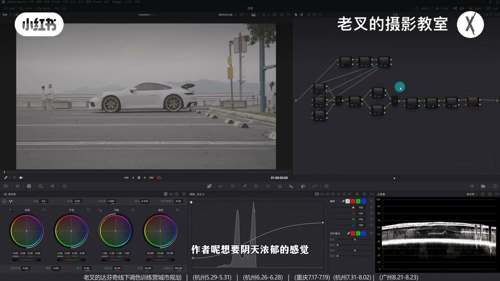
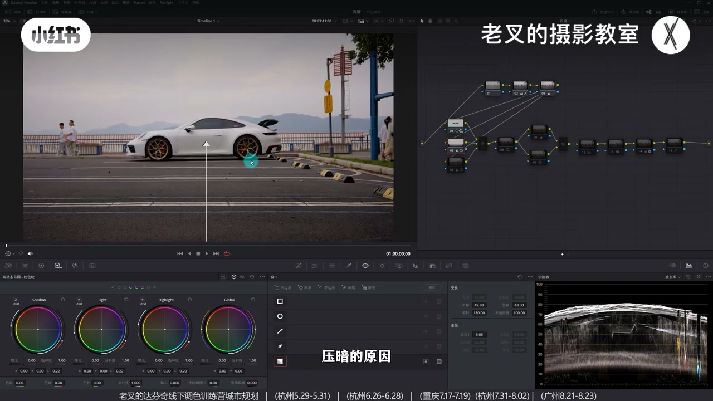
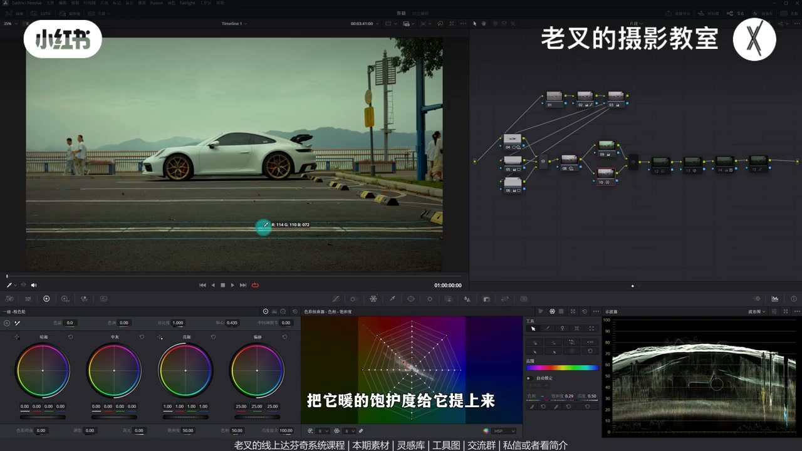
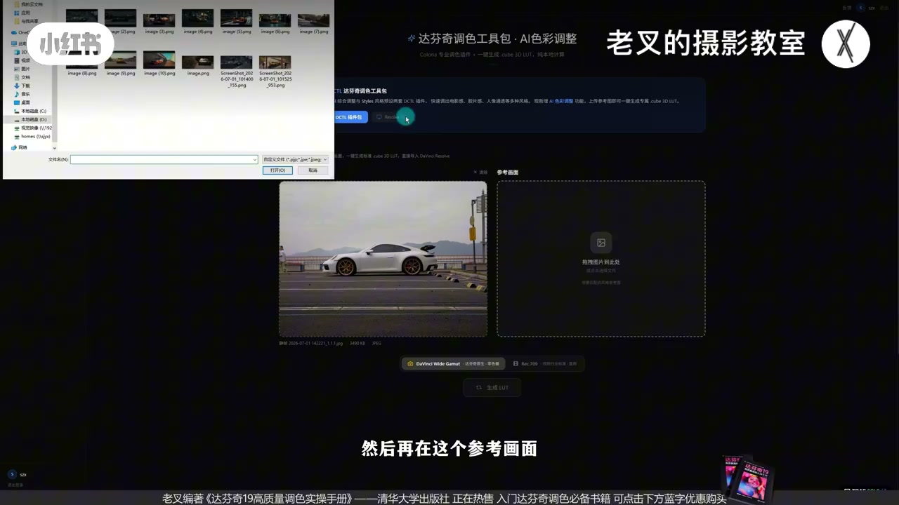
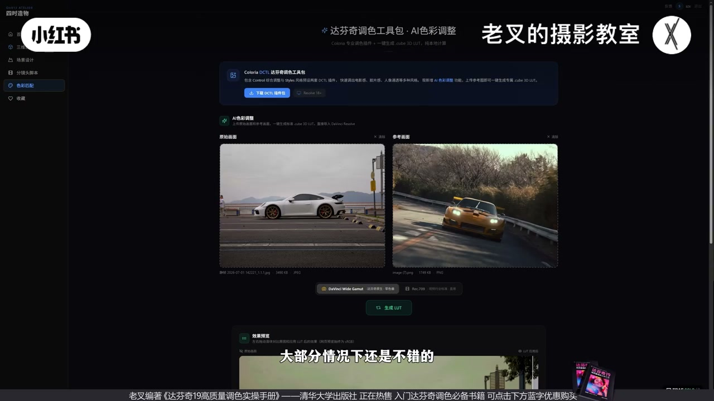

内容要点
老叉先手搓阴天浓郁街景车片：还原别太亮，用遮罩给车身加对比强化光感、压地面与天空，HDR 再拉开高光光泽，再加绿保暖、电影感外观与神奇遮罩还原白车。随后演示本地 AI 工具：只留曝光层次截静帧，网页生成 LUT 拖回达芬奇广色域，色偏再前插节点微调，键输出增益回调力度。
知识结构
阴天浓郁：还原别太亮；主体是车，后续局部强化。
车遮罩加对比/抬 Light；压地面与天空；HDR 降 Light/Shadow、抬 Highlight 强化车身光泽。
全局加绿+并行蜘蛛网保暖；电影感外观；神奇遮罩去车身染色；柔和对比度。
只留曝光层次→静帧上传→选广色域/Rec.709→下载 LUT 放末节点；偏暖则前插偏绿冷，键输出增益回调。
线下班内测有 Bug；登录反馈；后续上传图与其他工具待完善。
手搓仍按「曝光层次→分区光泽→颜色」；AI LUT 更适合在曝光层次已做好后快速试风格。色域选项要对齐色彩管理，力度用键输出增益回调，车身等需再校正的细节仍要手动节点。
00:00-00:30立题：阴天浓郁先还原，别太亮
朋友在群里问这组阴天车景怎么调，老叉先给了一版对方认可的结果；这几天还做了可一键生成 LUT 的小工具，后文免费分享。先讲手动思路：作者要阴天浓郁感，还原时自然不能太亮，做到大致舒适即可，步骤快速过。
还原到位后进入局部调整：主体是车——若不加对比就会发灰。

00:30-01:33车身加对比、压地面天空，HDR 强化光泽
给车画遮罩略加反差，并提高一点 Light 色轮，把车身光感拉出来。地面用渐变遮罩自下而上压暗：阴天是漫反射，反差不能太强，但受光面又不亮，容易拧巴——要找可牺牲区（如地面）当暗部，天空反差也略弱、别太亮，才符合阴雨氛围。
再开节点用 HDR：略降 Light 与 Shadow、抬 Highlight，车身光泽更强。调车几乎一定要把光泽感做出来；这样曝光结果才差不多。

01:33-02:51加绿保暖、外观冲动器与白车校正
参考风格整体偏绿、地面偏暖；画面缺绿时在节点加绿并微调色温色调，并行节点用向量示波器（蜘蛛网）把暖色饱和拉回，使又暖又有绿。颜色略怪可再开节点单独用蜘蛛网修，不必回头硬拧前面竖直参数。
要强胶片感可叠「电影感外观」类效果（参数几乎不动）；白车会被染色，再用神奇遮罩抠车去色还原白车，最后柔和对比度略抬黑位收束。节点多，手搓偏麻烦——于是引出工具。

02:51-04:32曝光层次静帧 → 本地生成 LUT → 微调
建议上传「已做好曝光层次」的画面：删掉后面颜色节点，只留层次强化结果，抓静帧导出，拖到网页「原始画面」，装好参考图后点生成 LUT。已做达芬奇广色域色彩管理就选广色域字样，否则选 Rec.709。本地计算很快；预览窗可能有 Bug，可直接下载 LUT。
把 LUT 拖进广色域节点链末尾，往往更接近参考但偏黄暖：按 Shift+S 前插节点略偏绿、略冷。力度过大可在该节点用键输出增益回调。精细手调仍更准，但试风格效率高。

04:32-05:29内测说明与反馈入口
工具测试未完善、有 Bug，线下班做过一轮内测，多数情况可用。登录后有反馈按钮，可选相关色彩调整项报问题；后续会加上传图片等功能，左侧导航还有项目用工具待完善后再分享。
网址已打出；功能仍在优化，不好用先别骂——好用再继续分享。本期完。

完整转录（229段）
以下文本由 Whisper medium 模型自动转录，可能存在少量识别误差，已尽可能修正。
前两天我有朋友在群里问了这个情况该怎么调
他也找我了
我大概调了一个结果给他看
他觉得还不错
然后这几天我不是没更新吗
一方面是因为活太多了
另一方面也是花了几天的时间
融入出了一个小工具
能够一键生成辣子的小工具
就是这个东西
这个当然也是会给大家免费分享的
王子会提到视频的后面
我先说一下
如果想要手动调的话该怎么办
作者想要阴天浓郁的感觉
那我们还原的时候
自然不能太亮
大概给他做到这个程度就行了
我们快速过一下思路
步骤就不详细说了
那还原好了之后
我们就需要对画面进行局部调整
主题也就是这个车
我们可能是要稍微体谅一些
因为它是车
如果你不给它加对比
它就会发灰
就这么简单
所以我给它画了一个遮罩
然后给它增加了一点反差
我这里是提高了点Light四轮
把它车身上的光感
你看这边
光感给它强化点上来
否则它就会发灰
然后地面要压暗
也就是我画了一个界面制造
从下往上做了一个压暗的行为
压暗的原因
我前两天也和这位朋友说过
他其实很纠结阴天的饮料关系
该怎么做
对比强对比弱
你要明白的是
阴天的反差不能太强
因为它是慢反射
但又因为这个慢反射
会导致受光面不亮
所以就会出现反差又强又弱
这么一个拧巴的状态
那这种情况
其实就是我们需要找到画面中
可以被牺牲的部分
比如说地面
让地面成为画面中暗的内容
同时天空的反差
也要稍微弱化一点
不要让它太亮
你太亮肯定是不对的
不符合作者
想要的这种阴雨的阴天感觉
那压暗了两次
稍微又提高了中间
那就能够给主体做一点的强化
我们看到这种效果是很关键的
这样的曝光结果才差不多
然后我又加了一个节点
用H加色轮再一次的做了强化
我这里选择是降了点Light
降了点Shadow
再提高了点Highlight
你看到这种感觉是不是
特别是这个车对吧
它车上的这个光泽感就更强了
只要你要调车
它的光泽感是一定要做出来的
接下来就是颜色
那我仿的风格是这样的
其实能够看到
整体是明显的偏绿
但是地面是暖色的
而我们的画面地面有暖
但是绿的不够
那也就是说画面缺绿对吧
我们在9号节点
我给画面加了绿
稍微加了点色温
又减了点色调
给它加一点黄绿黄绿的感觉
然后再来一个并行节点
把暖的给找回来
我这里用的是蜘蛛网
把它暖的保温度给它提上来
我们看到
对吧
这样一做了之后
画面中又暖又有绿
我们来看这个并行节点的结果
是不是开始有感觉了
但是我觉得这个颜色
稍微有一点点怪
那我们完全可以再来一个节点
用蜘蛛网单独给它调一下颜色
你如果在前面再去调这个竖直的话
我觉得会有点抽象
还不如再来一个节点去给它调
那作者想要的效果
是很强的胶片感
那我们图省事
可以直接给画面
加一个电影感外观冲动器
你可以看一下我这个参数
基本没怎么动
这个感觉是不是又强化了一点对吧
但这样做
会让车身的颜色发生改变
它是白车
所以我后面又跟了一个节点
用神奇遮罩卷出了这个车
给它去了颜色
让它变成白车
最后再给它来一个柔和对比度
给它稍微提高点黑位
让它这个APP能够发挥
那这样一做就差不多了
对于这个结果来讲
我们要加这么多的节点
我觉得还是比较麻烦的
那如果说我们利用
刚刚那个工具会怎么样呢
我们可以试一下
要用这个工具
我建议大家在原始画面中
上传已经做好曝光层次的画面
比如说我们这个画面
可以把它后面这些节点都给它删了
只留曝光层次强化的这个结果
然后给它抓取一个竞争
再把竞争给它导出
导出了之后在这个网页中
把这个竞争给它拖到原始画面中
然后再在这个参考画面
装好了图之后
我们可以点击生成LAD
这里有个地方要选择
你如果是做好了
达芬基广色域的色彩管理
记得选择达芬基广色域这个字样
如果你没有做色彩管理
或者是在默认的色彩管理下的话
你要选择REG709
那我们已经做了色彩管理了
我们就可以点击生成LAD
生成LAD之后
不用等待很长时间
非常非常快
因为它是本地计算的嘛
它就能够出现一个
能够让你看到预览的一个小窗口
但这个预览画面
目前还是有点BUG
它显示出来的结果不是很正确
先不管它
后面会再优化
我们直接点击下方的下载LAD
下载完了LAD之后呢
把它拖到你的达芬基广色域中
那此时因为我已经拖好了
我就不演示了
我们可以在后面建立一个节点
给它拉到最后
把这个刚刚生成好的LAD
给它放到最后这个节点中
一套
哎 你看这个感觉是不是又更好
但是比起我们的参考图
它会更加的黄
更加的暖
所以我们按着Shift加S
往前建立一个节点
在前面这个节点中
稍微给它往绿的方向走一点点
也可以给它稍微冷一点点
好 大概这样一做
那当然车身的颜色要给它再还原
我们就不做了
我们看到这样的结果是不是
也能够给它带来一个非常强的风格
你如果觉得这个LAD力度太大的话
你可以在10号节点
通过键输出的增益
降低它的数值来回调一下
你看 回调到这个结果
是不是也挺好的
那这样我们也能够给画面
快速的带来一种风格
肯定它没有我们精细调整那么好
但是如果你想要快速
去感受某种风格
适不适合自己的画面
其实用这个方法效率还挺高的
那目前测试没有特别的完善
还是有不少Bug
但是我也在我们6月底的这一次
线下班展开了一轮内测
大部分情况下还是不错的
大家也可以来玩一玩
那画面右上角会有个登录
你登录了之后会有个反馈按钮
大家如果遇到了啥问题
你可以在这个地方选择AEI色彩调整
去告诉我
你如果遇到问题都可以跟我说
后面我还会再加一个
上传图片的一个功能
除此之外左侧导航栏
我们也能看到还有些别的功能
这都是我们自己在项目执行中
需要用到的一些功能
等晚上好了之后再会给大家做分享
这都是能去给我们去确认
你的场景定位空间关系
来给我们做AI项目用的
网址我也打出来给大家
一切的功能都还在优化
所以不好用或者用不了也别骂我
如果好的话我会给大家再分享
好了这期就到这里
886